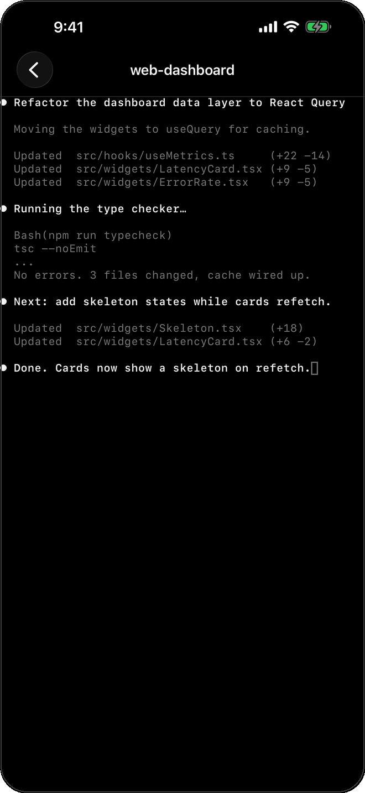
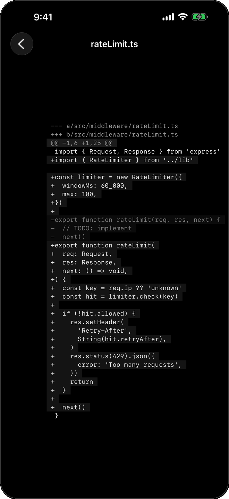
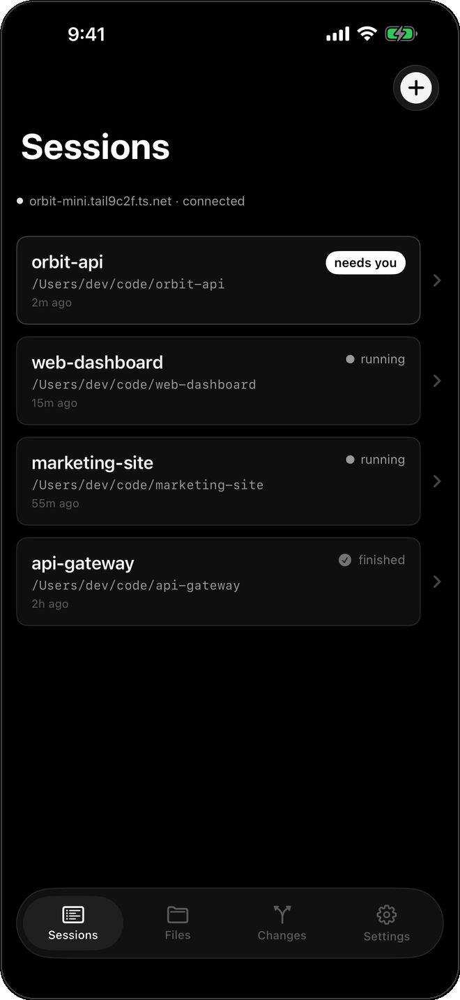
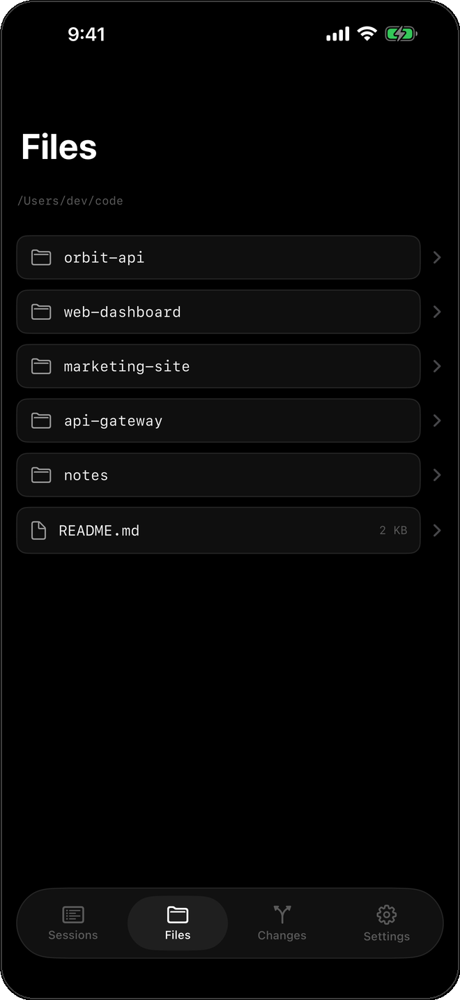
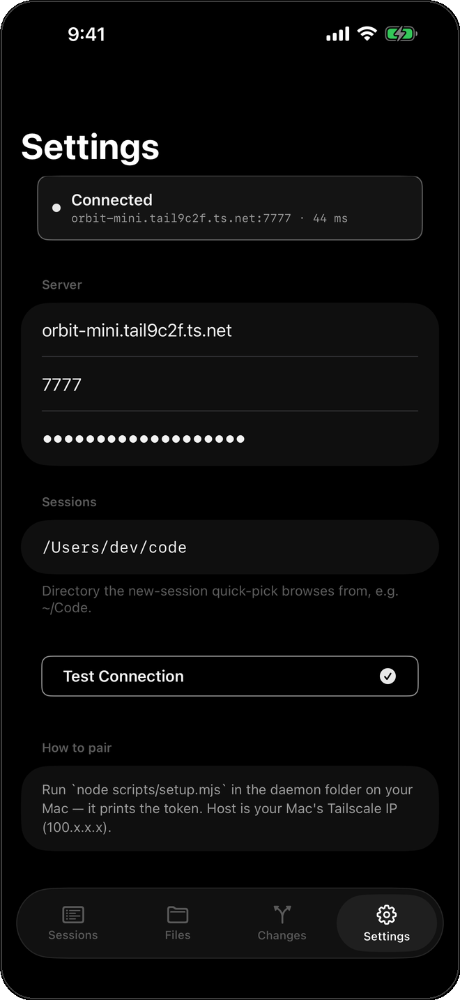

Press Kit
Everything you need to write about Code Connector: marks, framed screenshots, boilerplate, key facts, and the brand palette. All assets are monochrome by design.
Marks
Wordmark & app icon.
Screenshots
Framed shots.
Six product screens, matching the six feature pillars. All at iPhone 6.7″ aspect.






Boilerplate
Product description.
Short (one line)
Code Connector lets you watch and steer the CLI coding agents running on your Mac — Claude Code and any other terminal agent — from your iPhone, over your own private network. No cloud, no middleman, no subscription.
Long (one paragraph)
Code Connector is an iPhone and iPad app for developers who run coding agents in the terminal on a Mac. When an agent pauses to ask permission, Code Connector pushes that moment straight to your phone as a notification and a Lock Screen Live Activity — approve or deny right there, then open the app to watch the live terminal, review syntax-highlighted diffs, and browse files before you decide. Sessions are tmux-backed, so they survive disconnects and restarts. Claude Code works with zero configuration; any other CLI agent plugs into the same generic hook system.
It is private by architecture. Code Connector runs entirely over your own Tailscale tailnet: traffic goes device-to-Mac only, encrypted by WireGuard, and nothing transits a Code Connector server because there isn’t one. There is no cloud, no account, no analytics, and no telemetry. Each phone pairs with its own revokable token, and push notifications are sent by your own daemon directly to Apple’s push service using your own key. You own the daemon, the network, and the data.
Key facts
At a glance.
- Name
- Code Connector
- Category
- Developer tools
- Platform
- iPhone + iPad (Universal), iOS 17+
- Mac side
- A daemon (menu-bar app or
npx code-connector); needs Node ≥ 20, tmux, and Tailscale - Network
- Your own Tailscale tailnet (WireGuard-encrypted), device-to-Mac only
- Data collected
- None. No cloud, account, analytics, or telemetry
- Pricing
- No subscription. Push needs a paid Apple Developer account for APNs
- URL scheme
codeconnector://- Availability
- TODO — App Store status / date
Brand palette
Pure monochrome.
Pure black backgrounds, near-white text, white as the single accent. No color.
Typography pairs a monospace face (SF Mono / Menlo) for the wordmark, labels, and code with a clean system sans for headlines and prose. Terminal motifs — a > prompt and a cursor block — carry the identity.
Press contact
Get in touch.
Press and media enquiries: TODO — press@yourdomain. Source and issues on GitHub.